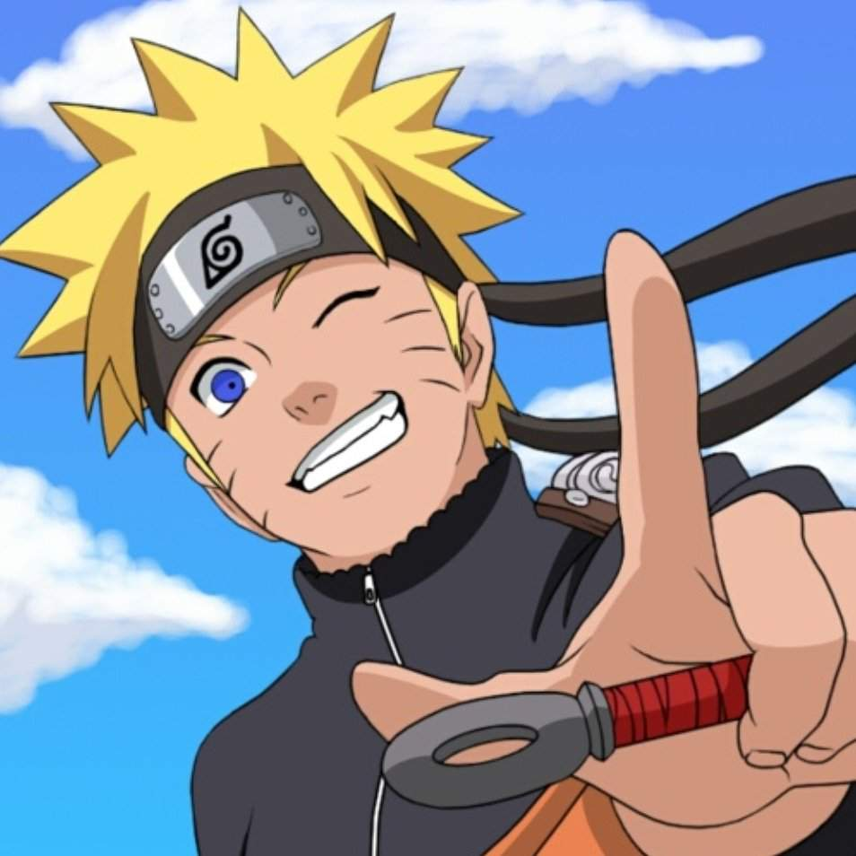

Naruto Uzumaki

Naruto Uzumaki is the protagonist of the hit Shonen Jump series Naruto
and Naruto Shippuden.
He is a ninja of the Uzumaki clan and the jinchuriki of the Nine-Tails.
- He's also known as "The Show-off, Number One Unpredictacble, Noisy Ninja" - what's not to like about that!
- Naruto's kind of the underdog, despite being the protagonist. He sets his dreams high and doesn't ever give up,
even when the odds are stacked against him.
- He's also really slow (not very bright), but he makes up for it with hard work and determination.